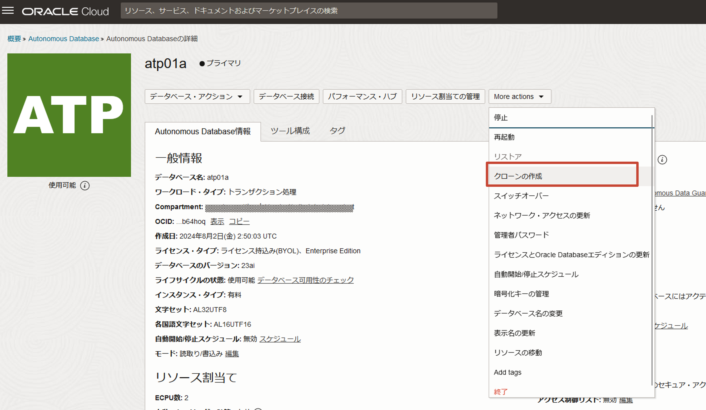
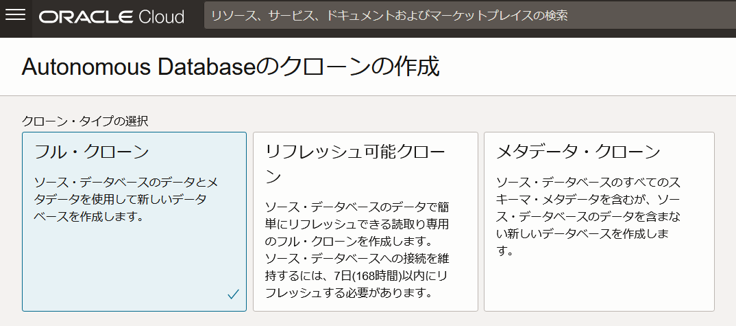
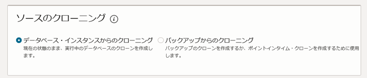
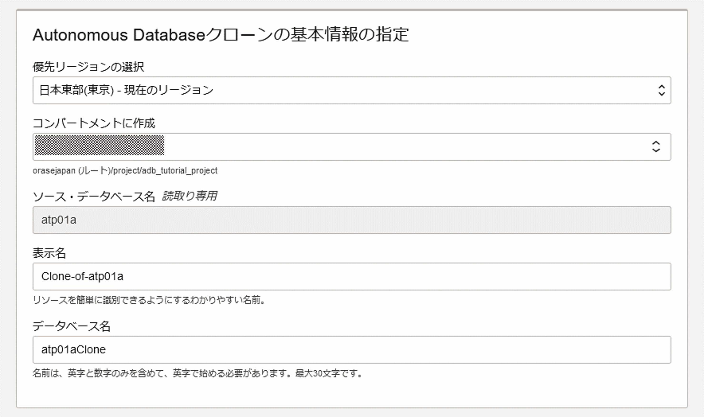
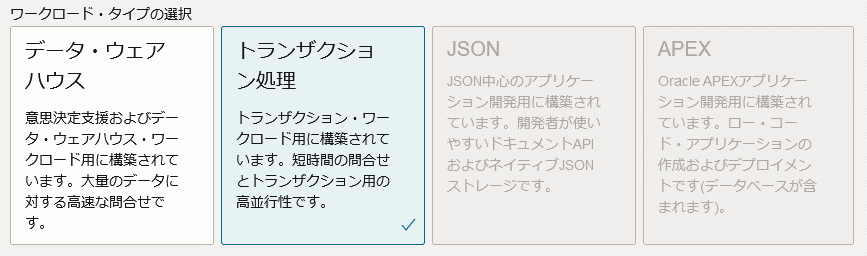
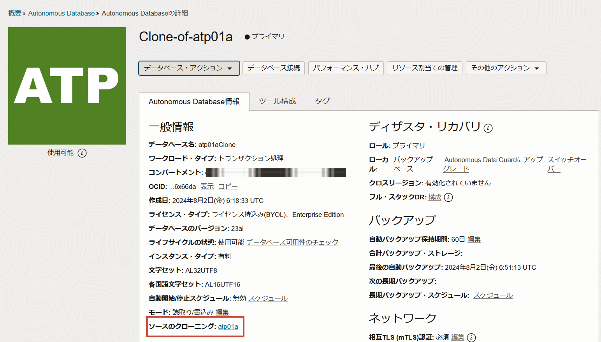
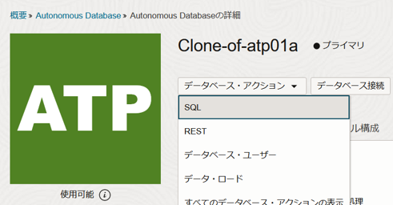
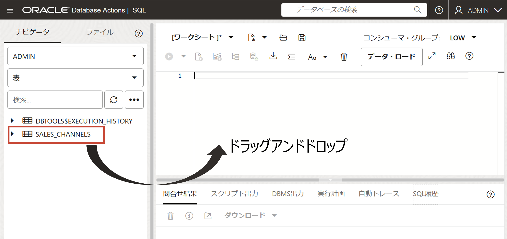
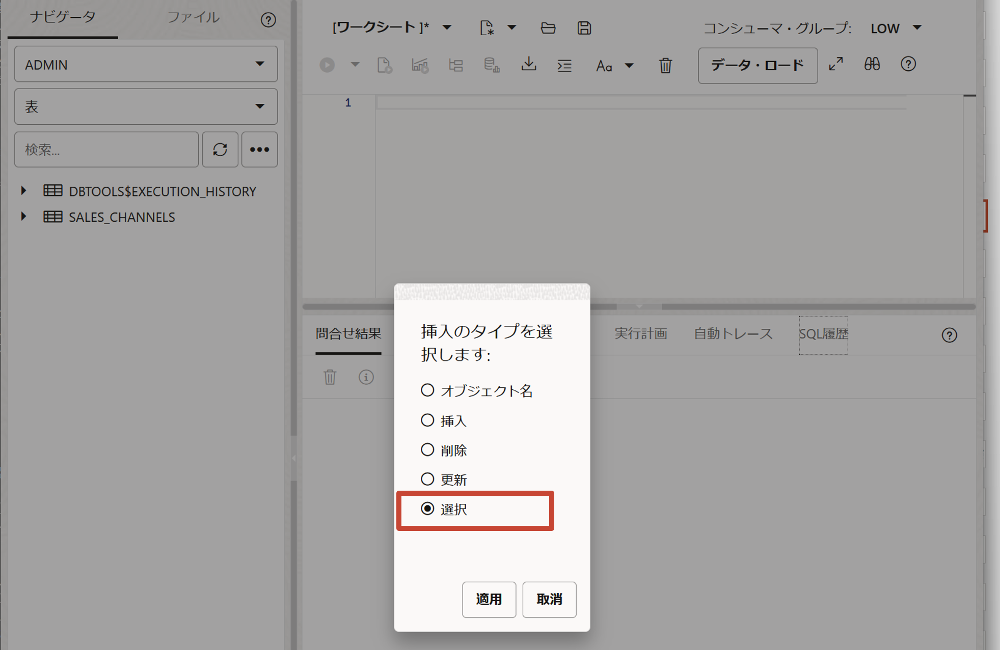
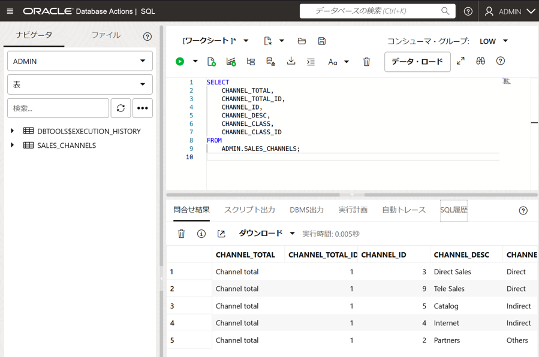

はじめに
Autonomous Databaseのクローン機能を利用することにより、テスト/検証/分析用途の環境を素早く簡単に作成することができます。
ソース・データベースはオンライン、オフラインのどちらでも構わず、作成するクローンのタイプは次の3種類からの選択が可能です。
| クローンのタイプ | 説明 |
|---|---|
| フル・クローン | ソース・データベースのメタデータとデータを含むデータベース全体のクローンを作成します。 |
| メタデータ・クローン | ソース・データベースの表や索引などのスキーマ定義やオブジェクト構成情報といったメタデータのみのクローンを作成します。データは含みません。 |
| リフレッシュ可能クローン | クローン作成後もソース・データベースの変更をリフレッシュで反映することができる更新可能なデータベース全体のクローンを作成します。（クローン作成後または前回のリフレッシュから1週間以内のリフレッシュが必要） |
また、クローンは、サブスクライブしている任意のリージョンの任意のコンパートメント内に作成でき、ソースデータベースと異なるネットワーク（VCN・サブネット）に配置できます。バージョン・コア数・ストレージ容量などを含むスペックなどの変更も可能です。
本チュートリアルでは、フル・クローンのタイプでクローンを作成します。
所要時間 : 約20分
前提条件 :
- 以下のチュートリアルが完了していること
- 101:ADBインスタンスを作成してみよう で、ADBインスタンスが構成済みであること
- 102:ADBにデータをロードしよう(Database Actions) でADMINユーザーでSALES_CHANNELS表が作成されていること
- チュートリアルの便宜上インスタンス名はatp01とします。
- SQLコマンドを実行するユーザー・インタフェースは、Database Actionsを使用します。
目次：
1. クローン環境を作成してみよう
ソース・データベースのインスタンス詳細画面から 「クローンを作成」 をクリックします。

クローンの作成画面が表示されますので、下記を参考に設定していきます。
クローン・タイプの選択
今回はフル・クローンを選択します。ソース・データベースのメタデータとデータが複製されます。

ソースのクローニング
フル・クローンまたはメタデータ・クローンの場合、クローンのソースを選択するオプションがあります。
- データベースインスタンスからのクローニング : 実行中のデータベースのクローンが作成されます。
- バックアップからのクローニング : バックアップリストからバックアップを指定してクローン、もしくは、過去の特定時点を指定してクローンします。
今回はデータベース・インスタンスからのクローニングを選択し、実行中のデータベースのクローンを作成します。

Autonomous Databaseクローンの基本情報の指定
クローンを作成するリージョン、コンパートメントおよびクローンの名前を指定します。
- リージョン : 任意のリージョンから指定
- コンパートメント：任意のコンパートメントを指定
- ソース・データベース名：atp01 ※ソース・データベース名が自動入力され変更は不可
- 表示名：Clone-of-atp01 ※任意の名前で指定が可能です。
- データベース名：atp01Clone ※任意の名前で指定が可能です。

ワークロード・タイプの選択
ソース・データベースと異なるワークロード・タイプの選択も可能です。ただし、次の表のとおりソース・データベースによって選択できるタイプが制限されるのでご注意ください。
| ソース | クローン |
|---|---|
| ADW | ADW/ATP |
| ATP | ADW/ATP |
| AJD | ADW/ATP/AJD/APEX Service |
| APEX Service | ADW/ATP/APEX Service |
今回はソース・データベースと同じトランザクション処理を選択します。

そのほかのクローン・データベースの設定
クローン・データベースの構成について必要な項目を設定していきます。
今回は以下のように指定します。各項目については2. ADBインスタンスを作成してみようの記載例をご確認ください。
- データベースの構成
- データベース・バージョンの選択 : 23ai ※ソースのバージョンよりも上である必要があります。
- ECPU数 : 2
- ストレージ、ストレージ単位サイズ : 20GB ※指定できる最小ストレージは、ソース データベースの実際の使用領域を次の GB に切り上げた値です。
- 自動スケーリングの計算 : なし
- ストレージの自動スケーリング : なし
- バックアップ保持
- 自動バックアップ保持期間(日) : 60
- 管理者資格証明の作成
- ユーザー名 : ADMIN
- パスワード : Welcome12345#
- ネットワーク・アクセスの選択
- アクセス・タイプ : すべての場所からのセキュア・アクセス
-
ライセンスとOracle Databaseエディションの選択 : ライセンス込み
- 運用上の通知およびお知らせ用の連絡先
- 連絡先の電子メール : なし
- 拡張オプションの表示 : 指定なし
最後に「Autonomous Databaseのクローンを作成」をクリックすると、プロビジョニングが始まります。
プロビジョニングが完了後、指定したコンパートメント内にクローン環境が作成されていることをご確認ください。クローンの場合、詳細のソースのクローニング でソースのADBインスタンスのリンクが表示されます。

2. 作成したクローン環境を確認してみよう
正しくフル・クローンされているか確認するため、作成したクローン環境にDatabase ActionsのSQLを使って、ADMINユーザーのSALES_CHANNEL表の存在とデータを検索します。 クローンした環境でも付属ツールを利用することが可能です（クローン作成のときに拡張オプションでソースと異なるようにツールの構成の変更もできます）。
ADBインスタンスの詳細のデータベース・アクションからSQLを選択します。

左側のナビゲータでSALES_CHANNELS表が表示され、メタデータがクローンされていることが確認できます。
次にデータがクローンされているかを確認します。SALES_CHANNELS表をワークシートにドラッグアンドドロップをすると、挿入のタイプが選択できます。

選択を選んで適用をクリックすると、SQLが入力されます。そのまま実行してSALES_CHANNELS表を検索します。


データが検索され、メタデータとデータが正しくクローンされていることが確認できました。
おわりに
本チュートリアルでは簡単に既存のAutonomous Databaseからクローンを作成できることを体感いただきました。今回はフル・クローンでしたが、クローンのタイプにメタデータ・クローンを選択すると同様の手順でメタデータ・クローンの作成が可能です。リフレッシュ可能クローンは 218 : リフレッシュ可能クローンを活用しよう で手順をご確認ください。
以上で、この章は終了です。
次の章にお進みください。
参考資料
Tips
-
データベースインスタンスからのクローニングとバックアップからのクローニングで違いはありますか？
バックアップからのクローニングは、オブジェクトストレージからデータをリストアする必要があるため、アクティブなデータベースインスタンスからのクローニングに比べ、時間がかかります。また、バックアップから作成できるクローンタイプはフル・クローンおよびメタデータ・クローンのみです。バックアップから更新可能クローンを作成することができませんのでご注意ください。
-
どのタイミングでクローンが作成されるのでしょうか?
ターゲット・インスタンスにはソース・インスタンスの断面と変更ログを転送しクローンが作成されます。また変更ログは可能な限り最新の断面となるよう直近まで転送、適用することで、ソース・インスタンスを再現します。そのため、アクティブなデータベースを元に作成されたクローンは、ピンポイントに特定の状態のクローンを取得したいときには適切ではありません。そのようなクローンを作成したいときには、一旦ソースデータベースを停止させた状態でクローンを取得する、またはバックアップからのクローンの取得がよいでしょう。
-
作成するクローンを制限することはできますか？
可能です。グループがAutonomous Databaseのクローン作成のみ可能でAutonomous Databaseの作成はできないようにクローン作成権限を制限したり、特定のタイプのクローン(フル・クローン、メタデータ・クローン、またはリフレッシュ可能クローン)のみを作成するように権限をさらに制限することもできます。詳細と例については、「IAM Permissions and API Operations for Autonomous Database 」を参照してください。
-
テナンシーをまたいだクローンはできますか？
可能です。ただし、CLIまたはREST APIでのみサポートされており、コンソールを使用した作成はできません。詳細は「Cross Tenancy and Cross-Region Cloning」 を参照してください。